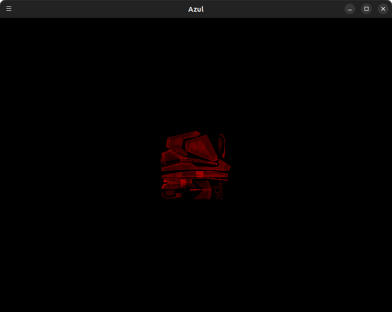
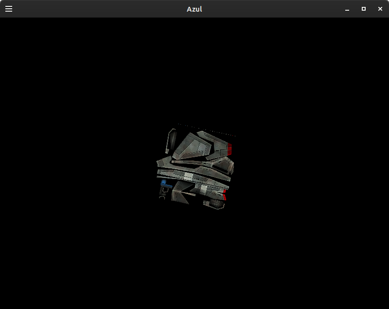
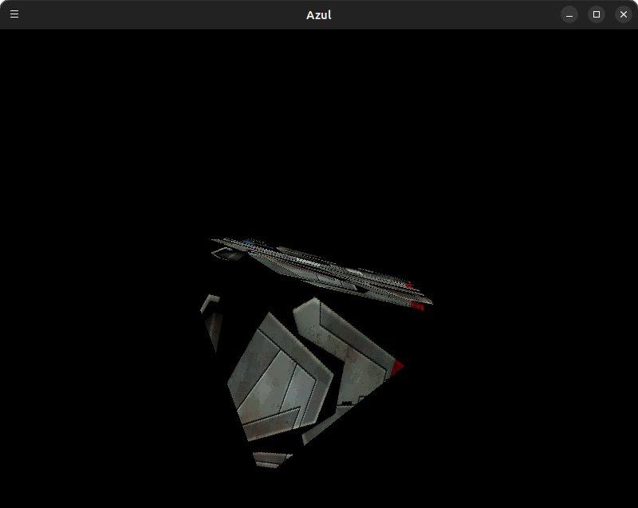

Working on porting my DePaul GAM-576 DirectX based engine to OpenGL (PC,Switch,Vita) and PS3.
8:00pm-9:00pm,10:00pm-11:15pm
Finished initial window creation/clear screen for Switch. Starting Nvidia CG shading language integration (for Windows): Installer for latest version (3.1, April 2012) available here: https://developer.download.nvidia.com/cg/cg_3_1_0013.html. Check the checkbox for "Files to run and link 64-bit (x64) Cg-based applications". Add Install dir include/lib dirs (C:\Program Files (x86)\NVIDIA Corporation\Cg\lib.x64,include) to cmake-gui. Based on PSL1GHT shaders, PS3 cg profile seems to be VP40/FP40. TODO try test shader following https://developer.download.nvidia.com/CgTutorial/cg_tutorial_appendix_b.html.
6:30pm - 10:30pm
Continue nvidia CG integration. Having issues using the Cg GL runtime, when setting the profile it always seems to return that the profile is unsupported. Was following the code example from https://github.com/FrozenStormInteractive/Cg-Toolkit/blob/master/examples/OpenGL/basic/01_vertex_program/01_vertex_program.c. Instead am going with using cgc to convert the cg into glsl during the CMake build process. See https://stackoverflow.com/questions/15920244/converting-hybrid-cg-hlsl-shaders-to-glsl-es (cgc filename -profile glslv/glslf). My test cg vertex shader compiled to glsl and was loaded in OpenGL code successfully, but the fragment shader output glsl had an issue where it thought the output color was an input uniform. Switching the cg code output to be a struct with an internal float4 color fixed the issue. TODO test that this cg change will compile/run on PS3 and Vita. Vita CMake config for auto-making VPK with shader files working.
8:30pm - 9:30pm
Continue nvidia CG integration. Working on adding PS3 shader code and testing. Added cmake compile cg to vpo/fpo macro. Tested in RPCS3.
9:30pm - 10:30pm
Continue nvidia CG integration. CG to glsl for switch working. Had to modify SwitchTools.cmake to not combine nro gen args string, which were being wrapped in quotes and interpreted as a single argument. Added to src/CMakeLists.txt romfs generation. Tested on switch hardware.
8:00pm - 10:00pm
Merge nvidia CG integration Begin logging implementation. Planning on remote logging to a gui interface. Created TcpServer/TcpClient for linux. Created starter/basic libgtkmm-4.0 gui. Created LogMsgHdr, BuildLogMsg
7:30pm - 10:00pm
Continue logging implementation. Create Azul::Log function w/ variadic args so it works like printf. Uses internal tcp client to write messages to gui. Add Vita TcpClient/TcpServer using documentation from https://docs.vitasdk.org/group__SceNetUser.html. Switch gui from libgtkmm-4.0 to libgtkmm-3.0 for glade
8:00pm - 10:00pm
Continue logging implementation. Switch build running. Noticed gui is missing some messages. However, using netcat (nc -l 1234) all messages are read...
6:00pm - 6:30pm, 8:00pm - 9:00pm, 11:00pm - 11:30pm
Continue logging implementation. Scrapping custom gui and just using netcat for now. PS3 implementation identical to PC/Switch, just needed to include <net/net.h> and link against -lnet. Start converting basic shaders from HLSL to CG. Shaders besides skinning written, compiled to glsl. TODO test on consoles. Implemented windows TcpClient/Server.
7:00pm - 9:00pm
Tested loading of all shaders on console. Added doxygen comments to current code. Added mkdocs/mkdoxy configuration.
3:00pm - 4:00pm, 5:30pm - 6:30pm
Copied in header/cpp files from math library. Fixed compile errors related to anonymous structures.
6:00pm - 7:30pm
Creating first ColorByVertex shader class. Added Camera Class. Added Color class. Added Shader SetMat4() for uniform, SetActive().
3:30pm - 4:30pm, 8:30pm - 10:00pm
Creating other shader object classes: ConstColor. Attempting to test rendering a triangle with hardcoded OpenGL code in Game, but nothing showing on screen currently. Turned out to be issue with the converted cg to glsl file. Giving up on trying to convert from cg to glsl, re-writing cg shaders manually. Tested with re-written glsl on PC, switch successfully - single red triangle renders. On PC/Switch need to transpose Mat4's prior to sending to shader (set GL_TRUE to transpose in glUniformMatrix4fv). On Vita no transpose necessary. TODO test PS3.
9:00pm - 10:00pm
Testing basic triangle on PS3. Triangle not showing up, debugging
7:00pm - 10:00pm
Fixed Debugging PS3 triangle. Needed to set the viewport every frame, and initialize a couple variables
7:00pm - 8:00pm
Testing more shader objects. Tested/wrote GLSL for ColorByVertex, confirmed on PC and consoles.
8:00pm - 9:00pm
Started ShaderObject_FlatTexture. Started Texture class, finished PS3 impl but untested.
3:20pm - 5:00pm
Finished texture class, ShaderObject_FlatTexture and space_frigate tga texture working on PC, Switch, Vita. PS3 crashing for some reason...
7:00pm - 8:00pm
Debugging PS3 Texture/ShaderObject_FlatTexture. Something to do with the Texture class - if texture not loaded, runs without crashing. Commented out STB library and created a manual 512x512 buffer of red pixels, still crashing also.
7:30pm - 8:30pm
Figured out PS3 Texture crash - was issue with array-out-of bounds as the buffer being accessed was a 32-bit pointer, not 8-bit:
// This code was crashing:
bpp = 4;
#ifdef AZUL_PS3_BUILD
mBuffer = (u32*)rsxMemalign(128, width * height * bpp);
// convert from RGBA to ARGB
for (size_t i = 0; i < width * height * bpp; i += 4) {
u8 inR = pData4[i+0];
u8 inG = pData4[i+1];
u8 inB = pData4[i+2];
u8 inA = pData4[i+3];
mBuffer[i+0] = inA;
mBuffer[i+1] = inR;
mBuffer[i+2] = inG;
mBuffer[i+3] = inB;
}
rsxAddressToOffset(mBuffer, &mOffset);
// This fixed the crash:
bpp = 4;
#ifdef AZUL_PS3_BUILD
mBuffer = (u32*)rsxMemalign(128, width * height * bpp);
u8* mBufferU8 = (u8*)mBuffer;
// convert from RGBA to ARGB
for (size_t i = 0; i < width * height * bpp; i += 4) {
u8 inR = pData4[i+0];
u8 inG = pData4[i+1];
u8 inB = pData4[i+2];
u8 inA = pData4[i+3];
mBufferU8[i+0] = inA;
mBufferU8[i+1] = inR;
mBufferU8[i+2] = inG;
mBufferU8[i+3] = inB;
}
rsxAddressToOffset(mBuffer, &mOffset);7:15pm - 8:15pm
Got ShaderObject_LightTexture working. On PS3, had to use GCM_VERTEX_ATTRIB_POS/NORMAL/TEX0 in rsxBindVertexArrayAttrib instead of hardcoding 0/1/2 as the position/normal/texcoord vertex attributes.
7:30pm - 8:30pm
Started sprite shader
7:00pm - 9:00pm
Finished sprite shader and tested. In order to test, had to implement the sprite vertex buffer/position calculation logic used internally in the GraphicsObject_Sprite and GameObjectSprite classes:
cam.setViewport(0, 0, WindowWidth, WindowHeight);
cam.setOrthographic(
-WindowWidth/2.0f, WindowWidth/2.0f,
-WindowHeight/2.0f, WindowHeight/2.0f,
1.0f, 1000.0f
);
cam.setOrientAndPosition(Vec3(0,1,0), Vec3(0,0,-1), Vec3(0,0,2));
cam.updateCamera();
...
float texWidth = 512.0f;
float texHeight = 512.0f;
float texImage[4] = {0.0f, 0.0f, texWidth, texHeight};
float texScreenRect[4] = {WindowWidth/2.0f, WindowHeight/2.0f, 256.0f, 256.0f};
float origWidth = texScreenRect[2];
float origHeight = texScreenRect[3];
float origPosX = texScreenRect[0];
float origPosY = texScreenRect[1];
float w = texImage[2] / texWidth;
float h = texImage[3] / texHeight;
float u = texImage[0] / texWidth;
float v = texImage[1] / texHeight;
Scale ScaleUV(w, h, 1.0f);
Trans TransUV(u, v, 0.0f);
Mat4 uvMatrix = ScaleUV * TransUV;
Mat4 origMatrix = Scale(origWidth, origHeight, 1.0f);
Mat4 worldMat = Scale(1.0f, 1.0f, 1.0f) * Rot(Rot1::Z, 0.0f) * Trans(origPosX, origPosY, 0.0f);
Trans toOriginLowerLeft(-cam.getScreenWidth()/2.0f, -cam.getScreenHeight()/2.0f, 0.0f);
Mat4 tmpMatrix = origMatrix * worldMat * toOriginLowerLeft;
pShader->ActivateShader();
pShader->TransferWorldViewProj(&cam, &tmpMatrix);
pShader->TransferUVCorrection(&uvMatrix);
pShader->TransferScaleColor((Color*)&Colors::White);
1:00pm - 5:00pm
Started Mesh class and implemented MeshCube. Had to figure out mapping shader vertex attribute locations for the different platforms. On PS3, can use GCM_VERTEX_ATTRIB_POS/NORMAL/... which match the Cg shader locations. On Vita, these don't exist (at least I don't think, haven't really looked). I tried copying the values from the PS3 names but that didn't seem to work. Instead, I made a global pointer to the current active shader, and set the attribute locations based on that shader name in a switch case. On PC/Switch, I use the VertexSlot enum in conjunction with using 'layout (location = X)' in the GLSL shaders and use the same values as in VertexSlot, then all of the mesh vertex attributes can be bound even if the current shader doesn't use them all.
7:00pm - 8:00pm
Start pyramid mesh class.
6:00pm - 7:00pm
Finish testing pyramid mesh class, add and finish sphere mesh class.
